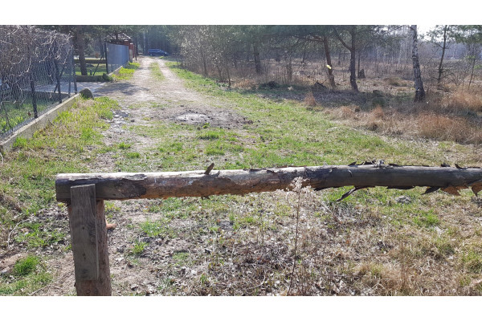
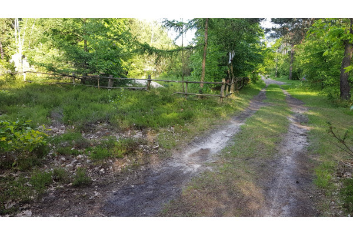
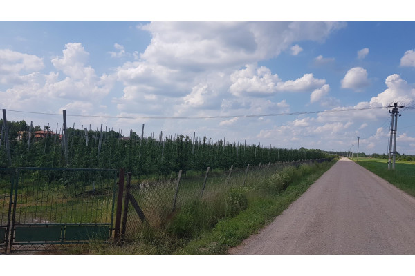
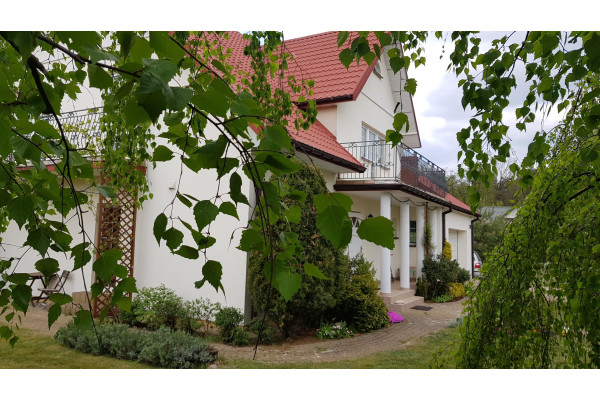

Oferty:
LAS I SPOKÓJ
Schowana działka (jedna z dwóch) w Malcanowie to idealna oferta dla ludzi pragnących poczuć bliskość lasu i odpocząć od zgiełku miasta. Media już są nawet internet. Brakuje kanalizacji trzeba będzie pomyśleć o szambie lub oczyszczalni. Dojazd przez las drogą ubitą, ale za to po kilku minutach przejazdu od głównych dróg asfaltowych, przenosimy się do magicznego świata drzew i krzewów. Sąsiedztwo miłe i zgrane. W lesie, w pobliżu, staw i dużo grzybów. Bliskość natury i spokój aż kipi z tych działek. Przekonaj się sam!
W LESIE A BLISKO WSZĘDZIE (otwocki, Wiązowna, Emów)
Duża, piękna działka z prywatnym lasem to Państwa marzenie? Za sprawą tej oferty może się spełnić. Działka leży w lesie, praktycznie jeden sąsiad a wokół tylko drzewa, ptaki i spokój. Dojazd przez las ul. Sosnową, przez którą w najbliższym czasie będzie prowadzony gaz, pewnie z czasem pojawi się też lepsza nawierzchnia. Z Sosnowej zjeżdżamy w bok i po dwóch minutach jesteśmy na miejscu, w swoim prywatnym raju. Zieleń i spokój na każdym kroku. Warunki na zabudowę jednorodzinną już zostały wydane dla tej działki, woda, prąd do pociągnięcia od sąsiada, gaz powinien być w przyszłym roku. Dojazd z Emowa do Józefowa czy do stolicy dzięki budującej się obwodnicy Warszawy, bezproblemowy. Na zakupy do Góraszki - gdzie ma powstać ogromne centrum handlowe też będzie bardzo blisko. Zapraszam do oglądania i inwestowania to bardzo ciekawa propozycja dla ludzi ceniących sobie spokój, naturę i komfort życia.
MEDIA, CISZA I DOBRY DOJAZD. (otwocki, Wiązowna, Duchnów)
Szukacie Państwo działki z mediami i dobrym dojazdem, proszę bardzo mam coś odpowiedniego. Działka położona jest w Duchnowie, na rogu dwóch gminnych ulic, do głównej ul. Wspólnej można dojść chodnikiem wyłożonym kostką brukową, a na Wspólnej mamy przystanek linii 730, dzieci mogą być samodzielne i same dotrzeć do szkoły w Wiązownie czy Brzezinach. Dojazd do Góraszki i budującej się obwodnicy Warszawy również bardzo dobry. Media są tu wszystkie oprócz kanalizacji, ale i ta ma się tu pojawić w przyszłym roku. Czyli mamy wszystko aby wygodnie żyć a do tego jeszcze spokój i cisza. Działka powstała po podziale sadu. Możliwość dokupienia czterech podobnych działek i jeszcze niepodzielonego sadu ponad dwa hektary ziemi. Zapraszam do inwestowania można tu wybudować wygodny, nowoczesny dom lub kilka nieruchomości i do tego jeszcze za rozsądną cenę.
DUŻY DOM PRZY LESIE, WSZĘDZIE BLISKO! (otwocki, Wiązowna, Izabela)
Szybka przeprowadzka do idealnego miejsca, bez budowy, zgód, odbiorów i innych papierków. To możliwe dzięki naszej ofercie. Na sprzedaż mamy bardzo ładny, duży dom idealny dla rodziny. Dom ma 13 lat i wymaga lekkiego odświeżenia, remontu lub aranżacji wszystko zależy od Państwa potrzeb i gustu, dom ma olbrzymi potencjał trzeba go tylko trochę dopieścić. Wchodzimy drewnianymi drzwiami, w dużym przedpokoju, duża szafa wnękowa potem mamy kolejne drzwi drewniane i przed nami salon z jadalnią i schodami na górę. Plan jest otwarty z dużymi drzwiami tarasowymi na ogród. Mnóstwo światła i przestrzeni. W salonie oczywiście kominek, drewniana podłoga i drewniane belki - bardzo ładny detal. Kolejnym ciekawym akcentem jest piec kaflowy w jadali, a z jadali przechodzimy do bardzo dobrze doświetlonej kuchni z wyjściem na ogród. Dużo miejsca a mogłoby go być jeszcze więcej bo wyburzeniu ścian oddzielających kuchnię od salonu - temat do przemyślenia. Na dole mamy jeszcze łazienkę z prysznicem, garaż na dwa auta spiżarnię i pralnię czyli wszystko co powinno zapewnić komfort rodzinie. Na górę prowadzą drewniane schody a tam mamy cztery sypialnie w tym jedna małżeńska z garderobą i łazienką, którą trzeba urządzić, obecnie pomieszczenie to pełni funkcję składzika. Na piętrze jeszcze jest gabinet, wc i łazienka dla dzieci oraz dwie szafy wnękowe, które trzeba zabudować. I znów dużo miejsca, dużo możliwości aranżacji. Media wszystkie oprócz kanalizacji, jest przydomowa oczyszczalnia ścieków. Dookoła domu ładny ogród z nasadzeniami, pergolami, warzywniakiem i starymi drzewami. Przed domem chodnik i podjazd z kostki brukowej, brama na pilota. Dojazd drogą wewnętrzną, dom jest schowany, niedaleko las a wokół niewielu sąsiadów. Idealne miejsce na odpoczynek po pracy. A do pracy czy do szkoły świetny dojazd, kursuje tu autobus L48 do Wesołej i Sulejówka, samochodem szybki dojazd do Zakrętu czy węzła w Michałówku oraz budującej się obwodnicy Warszawy, blisko będzie do budowanego, ogromnego Centrum Handlowego w Góraszce. Jeśli komuś mało ziemi to obok jest działka do kupienia - 1500 metrów, może basen, a może boisko. Zapraszam do oglądania tego uroczego zakątka, to idealne miejsce do życia, cicho a dobra komunikacja, dużo miejsca, dużo przyrody, mało sąsiadów a do tego cena jak na ten metraż i okolicę bardzo rozsądna. Niewielkie nakłady a będzie tu bajka!!!.
